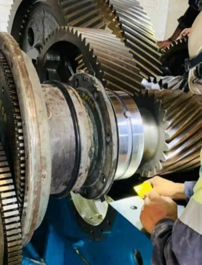
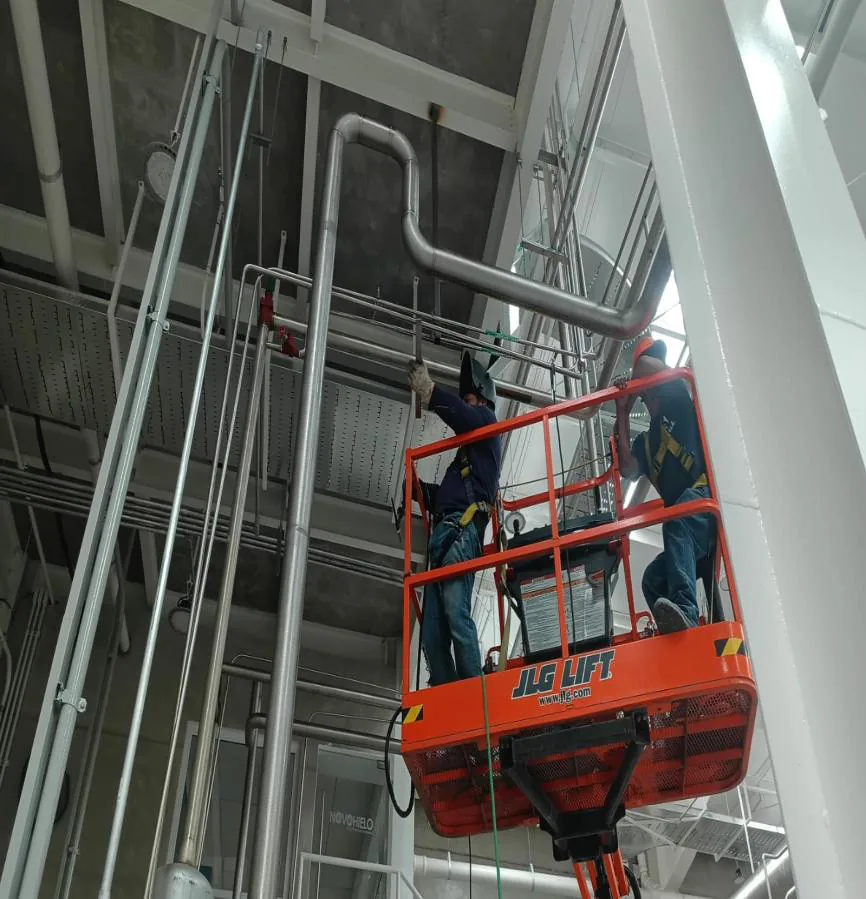
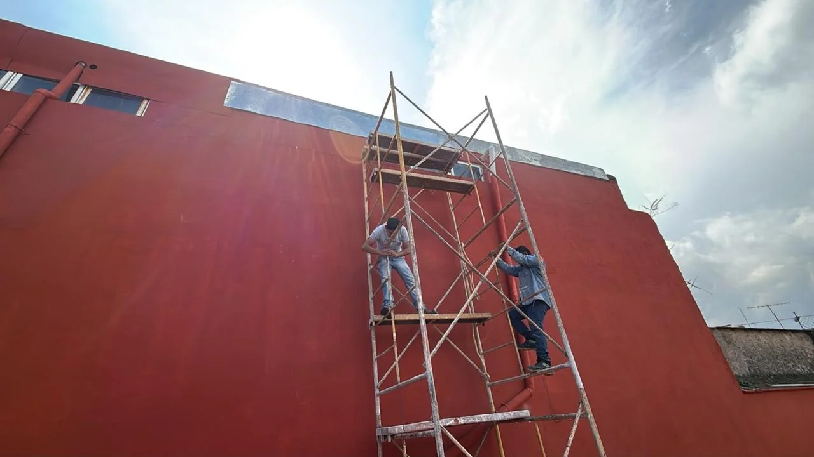
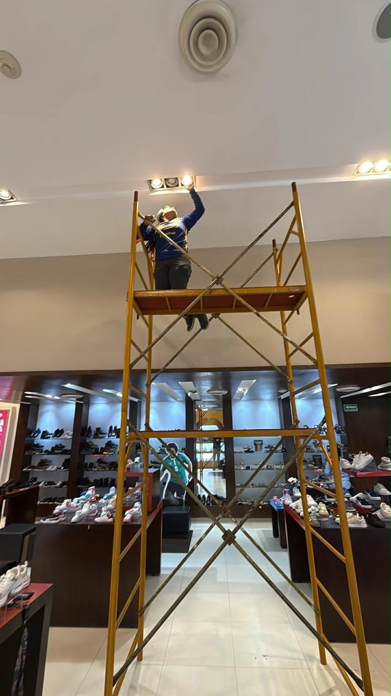

Capacidades
para resolver.
Especialidades que se complementan, desde fabricación y obra civil hasta mantenimiento eléctrico, acabados y climatización.
El servicio adecuado
para cada intervención.
Seis capacidades principales del perfil corporativo. Cada especialidad tiene su propio alcance y ejemplos de trabajo.

Mecánica industrial
Mantenimiento de equipos y sistemas neumáticos e hidráulicos.
Ver alcance ↗
Acero inoxidable
Fabricación de tanques y tubería para procesos de grado alimenticio.
Ver alcance ↗
Electricidad y automatización
Potencia, control y automatización industrial.
Ver alcance ↗
Montaje y construcción
Estructuras y construcción ligera en panel de cemento y tablaroca.
Ver alcance ↗
Recubrimientos
Aplicación de pinturas epóxicas y para altas temperaturas.
Ver alcance ↗Dictámenes técnicos
Dictámenes eléctricos y estructurales.
Ver alcance ↗Otras especialidades.
El mismo compromiso.
El material fotográfico de ISC también documenta trabajos de soldadura y mantenimiento a equipos de climatización.



Empecemos por
tu requerimiento.
Comparte las condiciones de tu instalación y la intervención que necesitas. Podemos conversar sobre el alcance antes de preparar una cotización.
Platicar un proyecto